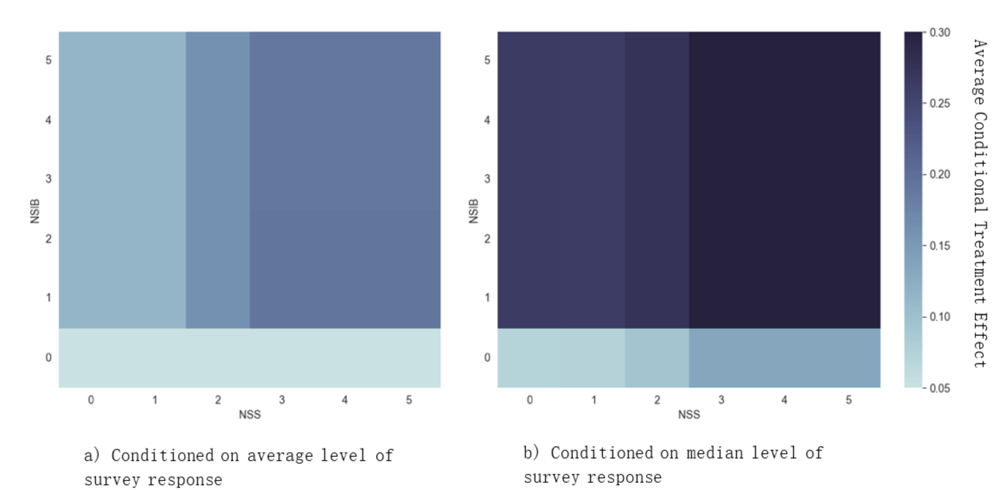
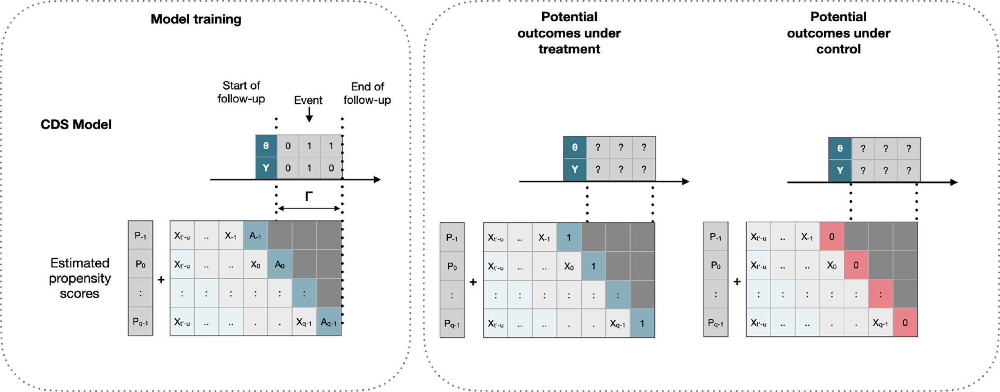
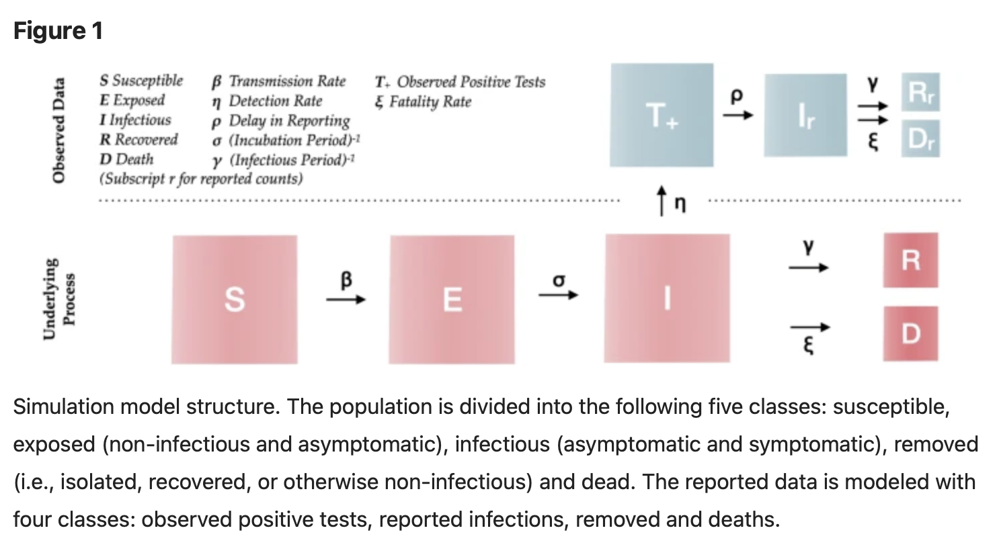
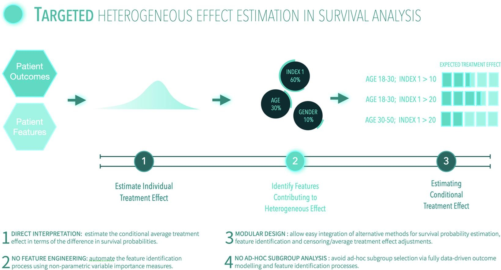

Research Fellow | Data Scientist
Elliot Zhu has diverse experiences from academic and industry, his current research interest is in Causal Inference in Health Informatics and Urban Health using deep learning techniques. He holds a PhD in health informatics and epidemiology from UNSW. Prior to academia, Elliot completed an honors thesis with a University Medal from Macquarie University, where he explored the intricate pricing dynamics of options within financial markets.
Working Projects
order by date descending
Abstract
This study investigates the causal relationship between campus walkability and the emotional walking experiences of students, with a focus on their mental well-being. Using data from 697 participants across seven Chinese tertiary education campuses, the study employs a counterfactual analysis to estimate the impact of campus walkability on students' walking experiences. The analysis reveals that students living in campuses with improved walkability are 9.75% more likely to have positive walking experiences compared to those without walkability renovations...
Publications
order by date descending

ausal inference for observational longitudinal studies using deep survival models.
Accepted by Journal of Biomedical Informatics (2022).
Abstract
This paper proposed a time-variant causal survival (TCS) model to estimate potential hazard functions under time-varying binary treatments using an ensemble of recurrent subnetworks. The method used ensemble training to capture the uncertainty of network estimation from varying random seeds, and a dedicated propensity score layer is used to adjust the selection bias presented in the data. TCS provides estimations of conditional treatment effect (CATE) in absolute terms using the difference between survival curves under different treatment conditions. In simulations studies, TCS model showed good causal effect estimation performance across scenarios of varying sample dimensions, event rate, confounding, and overlapping...

Evolution of disease transmission during the COVID-19 pandemic: patterns and determinants.
Accepted by Nature of Scientific Reports (2021).
Abstract
Epidemic models are being used by governments to inform public health strategies to reduce the spread of SARS-CoV-2. They simulate potential scenarios by manipulating model parameters that control processes of disease transmission and recovery. However, the validity of these parameters is challenged by the uncertainty of the impact of public health interventions on disease transmission, and the forecasting accuracy of these models is rarely investigated during an outbreak. We fitted a stochastic transmission model on reported cases, recoveries and deaths associated with SARS-CoV-2 infection across 101 countries. ...

Targeted estimation of heterogeneous treatment effect in observational survival analysis.
Accepted by Journal of Biomedical Informatics (2020).
Abstract
...The aim of clinical effectiveness research using repositories of electronic health records is to identify what health interventions ‘work best’ in real-world settings. Since there are several reasons why the net benefit of intervention may differ across patients, current comparative effectiveness literature focuses on investigating heterogeneous treatment effect and predicting whether an individual might benefit from an intervention ...
Tutoring & Workshop Experience
Worked/working as a Casual Academic (TA, RA) at the University of Sydney and Macquarie University in following units: Award Recipient for Outstanding Achievement in Teaching - Feedback for Teaching (FFT) Student Survey (2023)
- QBUS6002 Data Science in Business (Postgraduate course, 2023-);
- QBUS6810 Statistical Learning and Data Mining (Postgraduate course, 2022-);
- COMP1000 Introduction to Computer Programming (Undergraduate course, 2016);
- STAT2372 Probability (Undergraduate course, 2017);
The Research Projects on my portfolio will be updated soon.